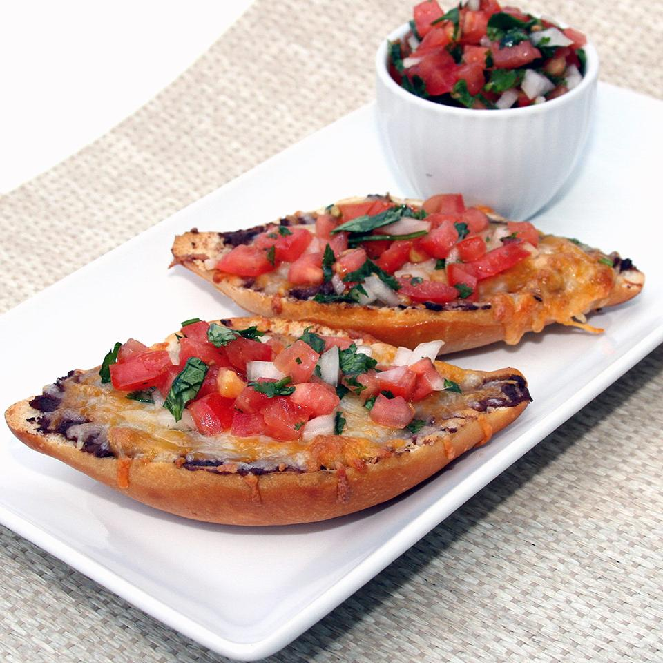

Molletes

Description
Molletes are a traditional Mexican open sandwich with refried beans and melted cheese served with salsa. Perfect for breakfast, lunch, or as a tasty snack.
Ingredients
- bolillo rolls
- butter
- refried beans
- cheddar cheese
- salsa pico de gallo
Steps
- Slice the bollillo in half, lengthwise.
- Spread butter on each half.
- Spread refried beans on bread. Sprinkle shredded cheese on top of the beans.
- Bake the molletes in preheated oven until the cheese is melted.
- Top the molletes with salsa pico de gallo.